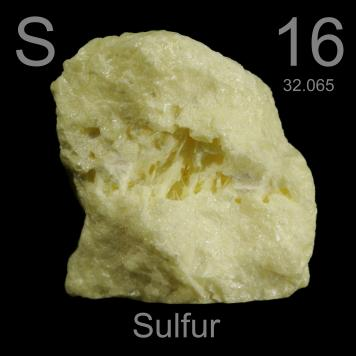

HOME
PREVIOUS
NEXT

Sulfur
Atomic Weight: 32.06
Density: 1.96 g/cm3
Melting Point: 115.21 °C[note]
Boiling Point: 444.72 °C
Sulfur is one of the few elements found pure in nature. This "native" sulfur is probably of volcanic origin. Also called brimstone, it oxidizes and is responsible for the characteristic smell of many volcanoes.